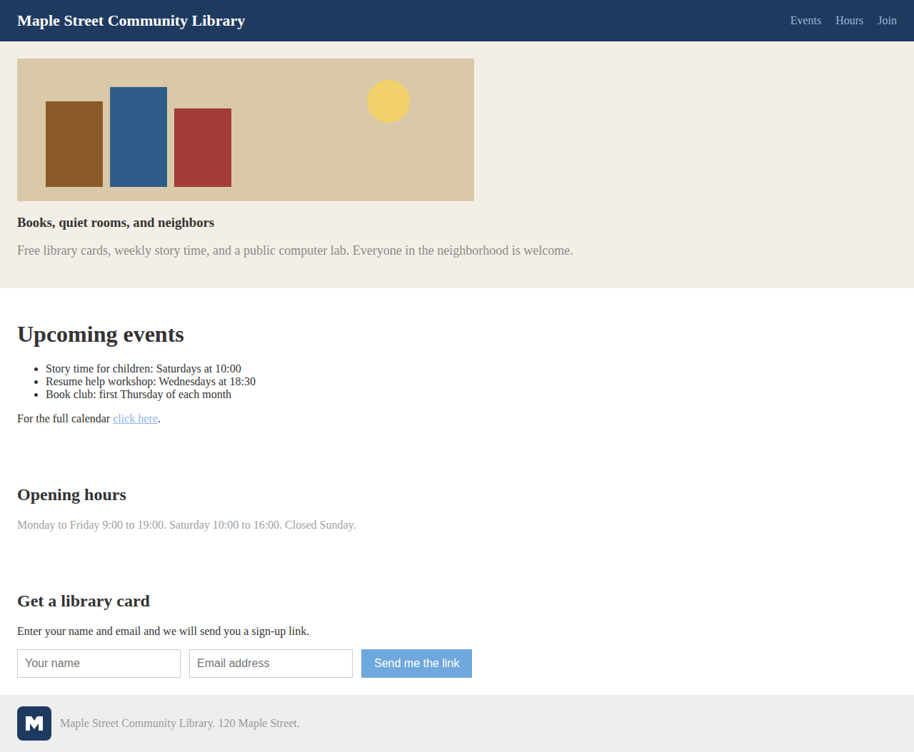
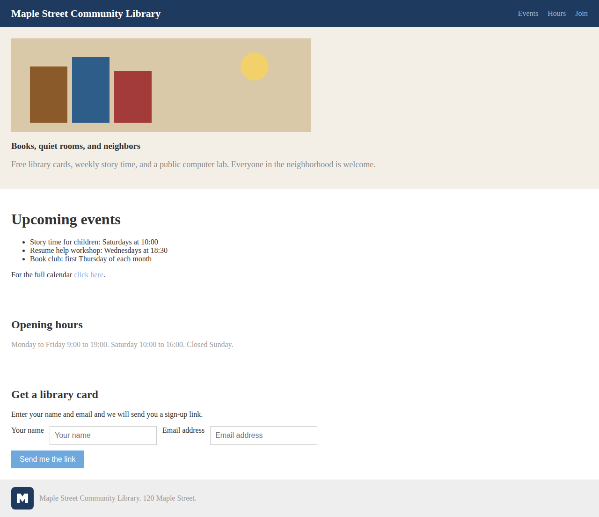

Run mode: MOCK
This run used a mock provider on synthetic data. It cannot satisfy the live-demo gate, and its numbers are not measurements.
Run summary
- Run id
20261004T003002Z-37b52c- Mode
- mock
- Arm
- accessibility_only
- Status
- success
- Stopping reason
- no_change
- Fixture id
demo-library- Fixture hash (before)
2732c60634b5a9fdb42b4b67a595b0d54b41e58797936840c2eed55ab07f0cac- Fixture hash (after)
2732c60634b5a9fdb42b4b67a595b0d54b41e58797936840c2eed55ab07f0cac- Fixture immutability
- PASS: fixture hash after the run equals the hash before the run.
- Code commit
f9e9c7dbb20c4edf95f840ce12ccf7a98ba9750a- Started (UTC)
- 2026-10-04T00:30:02Z
- Finished (UTC)
- 2026-10-04T00:30:05Z
- Visibility
- private
- Contract version
- 0.1.0
| Component | Version |
|---|---|
| python | 3.11.15 |
| contract | 0.1.0 |
| pydantic | 2.13.4 |
| anthropic | 1.11.0 |
| playwright | 1.63.0 |
Run notes
- MOCK RUN: repair text is scripted, not model output; must not enter empirical comparisons.
Run configuration
{
"arm": "accessibility_only",
"browser": {},
"budget": {
"max_calls": 3,
"max_total_usd": null
},
"fixture_dir": null,
"fixture_manifest": "fixtures/demo.manifest.json",
"hard_iteration_cap": 3,
"max_iterations": 2,
"max_output_tokens": 8000,
"mode": "mock",
"provider": {
"base_url_overridden": true,
"model": null,
"name": "mock",
"pricing": null
},
"retry": {
"transport_retries": 0
},
"runs_dir": "runs",
"timeout_s": 120.0
}Iterations
Iteration 0 (baseline, no model call)
- Status
- success
- Changed
- not available
- Input directory
iterations/0/input- Output directory
- none
- Evaluation mode
- live (differs from run mode mock)
- Evaluated HTML hash
3ebde981ee2f45d84f17f065c6dfd8101d939d05f2f772d7a624efcee0b86830- Browser
- chromium 141.0.7390.37, viewport 1280x800
Screenshots


Axe summary
axe-core 4.13.0
| Result type | Rules | Affected nodes |
|---|---|---|
| Violations | 5 | 18 |
| Incomplete (needs review) | 0 | 0 |
| Passes | 21 | not recorded |
| Impact | Nodes |
|---|---|
| critical | 2 |
| serious | 6 |
| moderate | 10 |
Violation rules and node targets (5 rule detail(s) recorded)
color-contrastimpact: serious. Elements must meet minimum color contrast ratio thresholds
Ensure the contrast between foreground and background colors meets WCAG 2 AA minimum contrast ratio thresholds
Tags: cat.color, wcag2aa, wcag143, TTv5, TT13.c, EN-301-549, EN-9.1.4.3, ACT, RGAAv4, RGAA-3.2.1- Target:
.lead
HTML:<p class="lead">Free library cards, weekly story time, and a public computer lab. Everyone in the neighborhood is welcome.</p>
Fix any of the following: Element has insufficient color contrast of 3.01 (foreground color: #8a8a8a, background color: #f4efe6, font size: 13.5pt (18px), font weight: normal). Expected contrast ratio of 4.5:1 - Target:
p > a[href$="#events"]
HTML:<a href="#events">click here</a>
Fix any of the following: Element has insufficient color contrast of 2.14 (foreground color: #8fb3e8, background color: #ffffff, font size: 12.0pt (16px), font weight: normal). Expected contrast ratio of 4.5:1 - Target:
.muted
HTML:<p class="muted">Monday to Friday 9:00 to 19:00. Saturday 10:00 to 16:00. Closed Sunday.</p>
Fix any of the following: Element has insufficient color contrast of 2.61 (foreground color: #a0a0a0, background color: #ffffff, font size: 12.0pt (16px), font weight: normal). Expected contrast ratio of 4.5:1 - Target:
button
HTML:<button type="submit" class="btn">Send me the link</button>
Fix any of the following: Element has insufficient color contrast of 2.52 (foreground color: #ffffff, background color: #6fa8dc, font size: 12.0pt (16px), font weight: normal). Expected contrast ratio of 4.5:1 - Target:
span
HTML:<span>Maple Street Community Library. 120 Maple Street.</span>
Fix any of the following: Element has insufficient color contrast of 2.45 (foreground color: #999999, background color: #eeeeee, font size: 12.0pt (16px), font weight: normal). Expected contrast ratio of 4.5:1
- Target:
html-has-langimpact: serious. <html> element must have a lang attribute
Ensure every HTML document has a lang attribute
Tags: cat.language, wcag2a, wcag311, TTv5, TT11.a, EN-301-549, EN-9.3.1.1, ACT, RGAAv4, RGAA-8.3.1- Target:
html
HTML:<html>
Fix any of the following: The <html> element does not have a lang attribute
- Target:
image-altimpact: critical. Images must have alternative text
Ensure <img> elements have alternative text or a role of none or presentation
Tags: cat.text-alternatives, wcag2a, wcag111, section508, section508.22.a, TTv5, TT7.a, TT7.b, EN-301-549, EN-9.1.1.1, ACT, RGAAv4, RGAA-1.1.1- Target:
img[src$="hero.svg"]
HTML:<img src="hero.svg" width="640" height="200">
Fix any of the following: Element does not have an alt attribute aria-label attribute does not exist or is empty aria-labelledby attribute does not exist, references elements that do not exist or references elements that are empty Element has no title attribute Element's default semantics were not overridden with role="none" or role="presentation" - Target:
img[src$="logo.svg"]
HTML:<img src="logo.svg" width="48" height="48">
Fix any of the following: Element does not have an alt attribute aria-label attribute does not exist or is empty aria-labelledby attribute does not exist, references elements that do not exist or references elements that are empty Element has no title attribute Element's default semantics were not overridden with role="none" or role="presentation"
- Target:
landmark-one-mainimpact: moderate. Document should have one main landmark
Ensure the document has a main landmark
Tags: cat.semantics, best-practice- Target:
html
HTML:<html>
Fix all of the following: Document does not have a main landmark
- Target:
regionimpact: moderate. All page content should be contained by landmarks
Ensure all page content is contained by landmarks
Tags: cat.keyboard, best-practice, RGAAv4, RGAA-9.2.1- Target:
.brand
HTML:<div class="brand">Maple Street Community Library</div>
Fix any of the following: Some page content is not contained by landmarks - Target:
.hero
HTML:<div class="hero"> <img src="hero.svg" width="640" height="200"> <h3>Books, quiet rooms, and neighbors</h3> <p class="lead">Free library cards, weekly story time, and a public computer lab. Everyone in the neighborhood is welcome.</p> </div>
Fix any of the following: Some page content is not contained by landmarks - Target:
#events
HTML:<div class="section" id="events">
Fix any of the following: Some page content is not contained by landmarks - Target:
#hours
HTML:<div class="section" id="hours"> <h2>Opening hours</h2> <p class="muted">Monday to Friday 9:00 to 19:00. Saturday 10:00 to 16:00. Closed Sunday.</p> </div>
Fix any of the following: Some page content is not contained by landmarks - Target:
#join > h2
HTML:<h2>Get a library card</h2>
Fix any of the following: Some page content is not contained by landmarks - Target:
#join > p
HTML:<p>Enter your name and email and we will send you a sign-up link.</p>
Fix any of the following: Some page content is not contained by landmarks - Target:
#name
HTML:<input type="text" id="name" name="name" placeholder="Your name" style="">
Fix any of the following: Some page content is not contained by landmarks - Target:
#email
HTML:<input type="email" id="email" name="email" placeholder="Email address" style="">
Fix any of the following: Some page content is not contained by landmarks - Target:
.footer
HTML:<div class="footer"> <img src="logo.svg" width="48" height="48"> <span>Maple Street Community Library. 120 Maple Street.</span> </div>
Fix any of the following: Some page content is not contained by landmarks
- Target:
Incomplete rules (0 rule detail(s) recorded)
No incomplete rule details recorded.
Passing rule ids (21 recorded)
aria-hidden-body avoid-inline-spacing button-name bypass color-contrast document-title empty-heading form-field-multiple-labels heading-order image-redundant-alt label-title-only label link-in-text-block link-name list listitem meta-viewport-large meta-viewport nested-interactive page-has-heading-one region
Task outcome
Task join-library:
completed
| Check | Status | Detail |
|---|---|---|
| keyboard_reachable | pass | 7/7 interactive elements reached by Tab; unreachable: none |
| focus_visible | fail | 7/7 focused elements show no visible indicator (heuristic). a[Events]: NO visible change; a[Hours]: NO visible change; a[Join]: NO visible change; a[click here]: NO visible change; input#name: NO visible change; input#email: NO visible change; button: NO visible change |
| task_steps | pass | 3 steps executed |
| success_selector_visible | pass | #thanks |
| success_text | pass | 'Thank you! Check your inbox for the sign-up link.' |
| external_requests_blocked | pass | blocked: none |
| preserved_text | pass | missing: none |
Preserved text missing: none recorded as missing.
Console and page errors
Console errors:
None recorded.
Page errors:
None recorded.
Source diff
Baseline iteration: no repair was applied.
Nielsen heuristic evaluation
Unavailable: no usability evaluator implemented.
Iteration 1
- Status
- success
- Changed
- yes
- Input directory
iterations/1/input- Output directory
iterations/1/output- Evaluation mode
- live (differs from run mode mock)
- Evaluated HTML hash
df57391e48ce5ac287354c9364d0abda9aeed5e0659fe401622026b6b3817752- Browser
- chromium 141.0.7390.37, viewport 1280x800
Screenshots


Axe summary
axe-core 4.13.0
| Result type | Rules | Affected nodes |
|---|---|---|
| Violations | 3 | 17 |
| Incomplete (needs review) | 0 | 0 |
| Passes | 25 | not recorded |
| Impact | Nodes |
|---|---|
| serious | 5 |
| moderate | 12 |
Violation rules and node targets (3 rule detail(s) recorded)
color-contrastimpact: serious. Elements must meet minimum color contrast ratio thresholds
Ensure the contrast between foreground and background colors meets WCAG 2 AA minimum contrast ratio thresholds
Tags: cat.color, wcag2aa, wcag143, TTv5, TT13.c, EN-301-549, EN-9.1.4.3, ACT, RGAAv4, RGAA-3.2.1- Target:
.lead
HTML:<p class="lead">Free library cards, weekly story time, and a public computer lab. Everyone in the neighborhood is welcome.</p>
Fix any of the following: Element has insufficient color contrast of 3.01 (foreground color: #8a8a8a, background color: #f4efe6, font size: 13.5pt (18px), font weight: normal). Expected contrast ratio of 4.5:1 - Target:
p > a[href$="#events"]
HTML:<a href="#events">click here</a>
Fix any of the following: Element has insufficient color contrast of 2.14 (foreground color: #8fb3e8, background color: #ffffff, font size: 12.0pt (16px), font weight: normal). Expected contrast ratio of 4.5:1 - Target:
.muted
HTML:<p class="muted">Monday to Friday 9:00 to 19:00. Saturday 10:00 to 16:00. Closed Sunday.</p>
Fix any of the following: Element has insufficient color contrast of 2.61 (foreground color: #a0a0a0, background color: #ffffff, font size: 12.0pt (16px), font weight: normal). Expected contrast ratio of 4.5:1 - Target:
button
HTML:<button type="submit" class="btn">Send me the link</button>
Fix any of the following: Element has insufficient color contrast of 2.52 (foreground color: #ffffff, background color: #6fa8dc, font size: 12.0pt (16px), font weight: normal). Expected contrast ratio of 4.5:1 - Target:
span
HTML:<span>Maple Street Community Library. 120 Maple Street.</span>
Fix any of the following: Element has insufficient color contrast of 2.45 (foreground color: #999999, background color: #eeeeee, font size: 12.0pt (16px), font weight: normal). Expected contrast ratio of 4.5:1
- Target:
landmark-one-mainimpact: moderate. Document should have one main landmark
Ensure the document has a main landmark
Tags: cat.semantics, best-practice- Target:
html
HTML:<html lang="en">
Fix all of the following: Document does not have a main landmark
- Target:
regionimpact: moderate. All page content should be contained by landmarks
Ensure all page content is contained by landmarks
Tags: cat.keyboard, best-practice, RGAAv4, RGAA-9.2.1- Target:
.brand
HTML:<div class="brand">Maple Street Community Library</div>
Fix any of the following: Some page content is not contained by landmarks - Target:
.hero
HTML:<div class="hero"> <img alt="Mock alt text: illustration" src="hero.svg" width="640" height="200"> <h3>Books, quiet rooms, and neighbors</h3> <p class="lead">Free library cards, weekly story time, and a public computer lab. Everyone in the neighborhood is welcome.</p> </div>
Fix any of the following: Some page content is not contained by landmarks - Target:
#events
HTML:<div class="section" id="events">
Fix any of the following: Some page content is not contained by landmarks - Target:
#hours
HTML:<div class="section" id="hours"> <h2>Opening hours</h2> <p class="muted">Monday to Friday 9:00 to 19:00. Saturday 10:00 to 16:00. Closed Sunday.</p> </div>
Fix any of the following: Some page content is not contained by landmarks - Target:
#join > h2
HTML:<h2>Get a library card</h2>
Fix any of the following: Some page content is not contained by landmarks - Target:
#join > p
HTML:<p>Enter your name and email and we will send you a sign-up link.</p>
Fix any of the following: Some page content is not contained by landmarks - Target:
label[for="name"]
HTML:<label for="name">Your name</label>
Fix any of the following: Some page content is not contained by landmarks - Target:
#name
HTML:<input type="text" id="name" name="name" placeholder="Your name" style="">
Fix any of the following: Some page content is not contained by landmarks - Target:
label[for="email"]
HTML:<label for="email">Email address</label>
Fix any of the following: Some page content is not contained by landmarks - Target:
#email
HTML:<input type="email" id="email" name="email" placeholder="Email address" style="">
Fix any of the following: Some page content is not contained by landmarks - Target:
.footer
HTML:<div class="footer"> <img alt="Mock alt text: logo" src="logo.svg" width="48" height="48"> <span>Maple Street Community Library. 120 Maple Street.</span> </div>
Fix any of the following: Some page content is not contained by landmarks
- Target:
Incomplete rules (0 rule detail(s) recorded)
No incomplete rule details recorded.
Passing rule ids (25 recorded)
aria-hidden-body avoid-inline-spacing button-name bypass color-contrast document-title duplicate-id-aria empty-heading form-field-multiple-labels heading-order html-has-lang html-lang-valid image-alt image-redundant-alt label-title-only label link-in-text-block link-name list listitem meta-viewport-large meta-viewport nested-interactive page-has-heading-one region
Delta versus previous iteration
| Metric | Previous | Current | Change |
|---|---|---|---|
| Violation rules | 5 | 3 | -2 |
| Violation nodes | 18 | 17 | -1 |
| Incomplete rules | 0 | 0 | no change (0) |
| Incomplete nodes | 0 | 0 | no change (0) |
| Passing rules | 21 | 25 | +4 |
A different count is an observation, not proof of better or worse accessibility.
Task outcome
Task join-library:
completed
| Check | Status | Detail |
|---|---|---|
| keyboard_reachable | pass | 7/7 interactive elements reached by Tab; unreachable: none |
| focus_visible | fail | 7/7 focused elements show no visible indicator (heuristic). a[Events]: NO visible change; a[Hours]: NO visible change; a[Join]: NO visible change; a[click here]: NO visible change; input#name: NO visible change; input#email: NO visible change; button: NO visible change |
| task_steps | pass | 3 steps executed |
| success_selector_visible | pass | #thanks |
| success_text | pass | 'Thank you! Check your inbox for the sign-up link.' |
| external_requests_blocked | pass | blocked: none |
| preserved_text | pass | missing: none |
Preserved text missing: none recorded as missing.
Console and page errors
Console errors:
None recorded.
Page errors:
None recorded.
Source diff
@@ -1,5 +1,5 @@ <!DOCTYPE html>-<html>+<html lang="en"> <head> <meta charset="utf-8"> <title>Maple Street Community Library</title>@@ -17,7 +17,7 @@ </div> <div class="hero">- <img src="hero.svg" width="640" height="200">+ <img alt="Mock alt text: illustration" src="hero.svg" width="640" height="200"> <h3>Books, quiet rooms, and neighbors</h3> <p class="lead">Free library cards, weekly story time, and a public computer lab. Everyone in the neighborhood is welcome.</p> </div>@@ -41,15 +41,15 @@ <h2>Get a library card</h2> <p>Enter your name and email and we will send you a sign-up link.</p> <form action="#thanks" method="get">- <input type="text" id="name" name="name" placeholder="Your name">- <input type="email" id="email" name="email" placeholder="Email address">+ <label for="name">Your name</label> <input type="text" id="name" name="name" placeholder="Your name">+ <label for="email">Email address</label> <input type="email" id="email" name="email" placeholder="Email address"> <button type="submit" class="btn">Send me the link</button> </form> <div id="thanks" class="thanks">Thank you! Check your inbox for the sign-up link.</div> </div> <div class="footer">- <img src="logo.svg" width="48" height="48">+ <img alt="Mock alt text: logo" src="logo.svg" width="48" height="48"> <span>Maple Street Community Library. 120 Maple Street.</span> </div> </body>
Model call provenance
- Provider
- mock
- Model
- none (mock)
- Call mode
- mock
- Attempts
- 1
- Input tokens
- unknown
- Output tokens
- unknown
- Latency
- 0.000353 s
- Estimated cost
- unknown
- Error
- none recorded
- Request parameters
{ "deterministic": true, "max_output_tokens": 8000 }
Nielsen heuristic evaluation
Unavailable: no usability evaluator implemented.
Iteration 2
- Status
- success
- Changed
- no
- Input directory
iterations/2/input- Output directory
iterations/2/output
No evaluation was recorded for this iteration.
Screenshots
Axe summary
Axe results are not available: no evaluation recorded.
Delta versus previous iteration
| Metric | Previous | Current | Change |
|---|---|---|---|
| Violation rules | 3 | not available | not available |
| Violation nodes | 17 | not available | not available |
| Incomplete rules | 0 | not available | not available |
| Incomplete nodes | 0 | not available | not available |
| Passing rules | 25 | not available | not available |
A different count is an observation, not proof of better or worse accessibility.
Task outcome
Task outcome not available for this iteration.
Console and page errors
Not available: no task report recorded.
Source diff
Model call provenance
- Provider
- mock
- Model
- none (mock)
- Call mode
- mock
- Attempts
- 1
- Input tokens
- unknown
- Output tokens
- unknown
- Latency
- 5.3e-05 s
- Estimated cost
- unknown
- Error
- none recorded
- Request parameters
{ "deterministic": true, "max_output_tokens": 8000 }
Nielsen heuristic evaluation
Unavailable: no evaluation recorded.
Run artifacts
Copies of these files are stored in the assets folder next to this report, so the folder can be moved as a unit.
Per-iteration prompt, response, diff and raw axe files are linked in each iteration above.